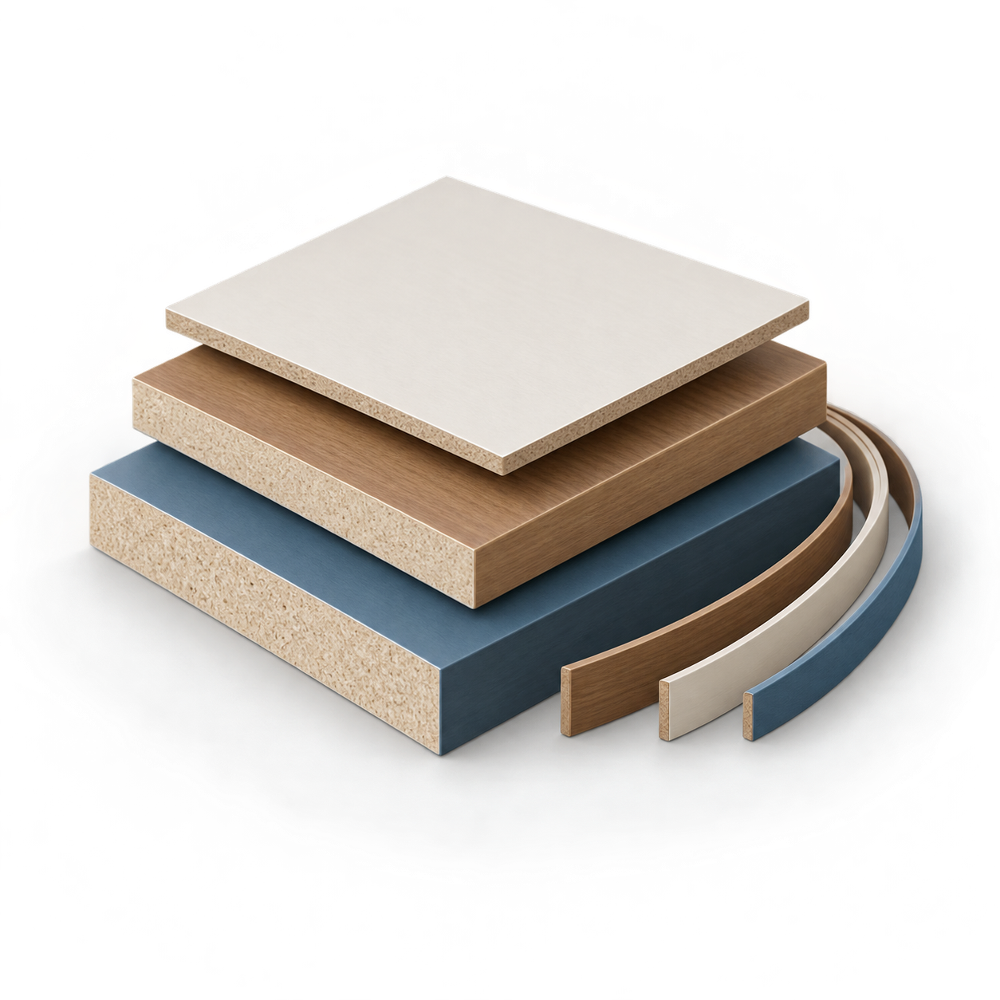
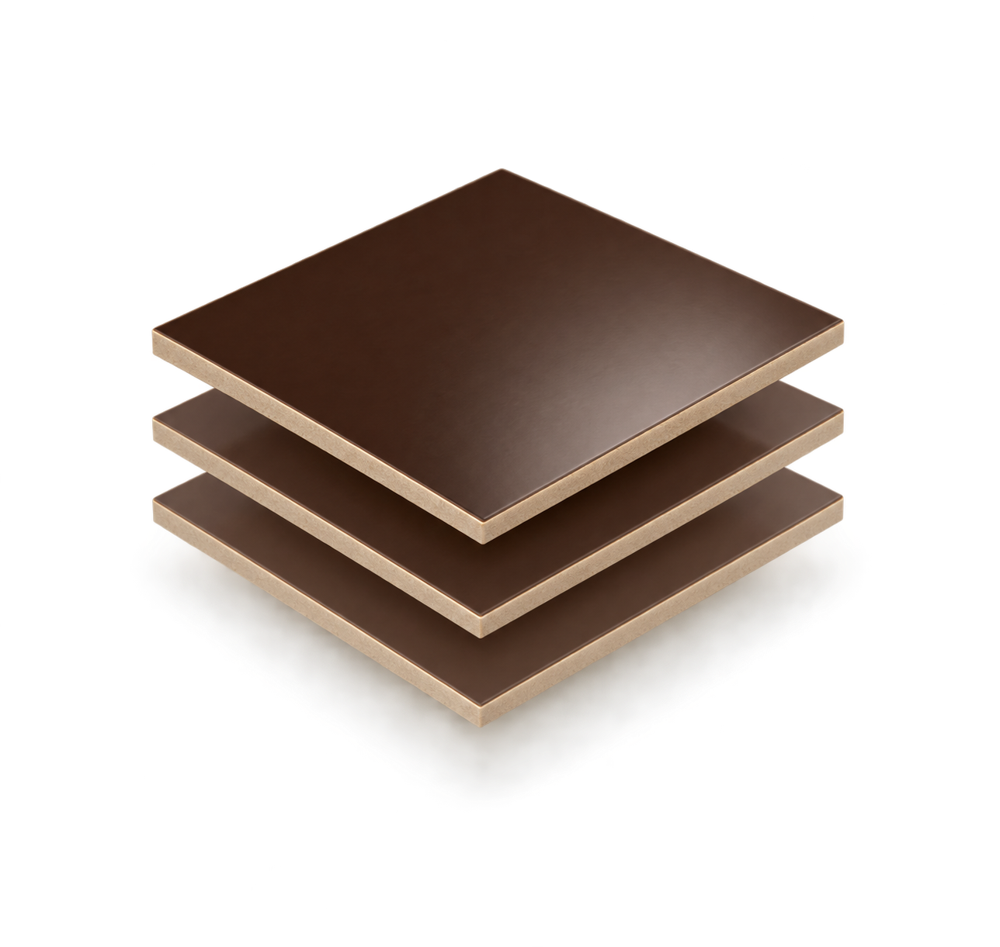

Раскрой листовых материалов
Проекты
Материалы
Раскрой
Отчёты
Справка
⚙
Проекты
⌃
Наименование проекта
Листы
Добавьте листы в разделе «Материал».
Кромки
Сохранить проект
Загрузить проект
Сохранить проект в файл
Материалы


＋ Лист
＋ Остаток
Материал
Длина
Ширина
Кол-во
Списки деталей
＋ Деталь
Импорт CSV
Экспорт CSV
3. Настройки
×
Ширина пропила, мм
Отступ от края, мм
Минимальный остаток, мм
Режим расчёта
Быстрый
Стандартный
Максимальная экономия
База материалов
layers
ДСП
view_quilt
Фасадный материал
grid_view
ХДФ
straighten
Кромка
Листы
＋ Добавить лист
Кромки
＋ Добавить кромку
Рассчитать раскрой
Min
Max
100%
Нажмите «Рассчитать раскрой»